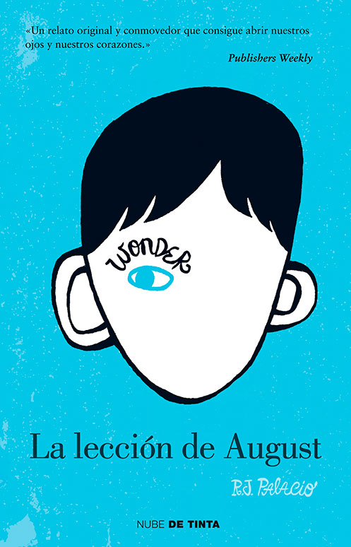

La lección de august

Wonder
La lección de August (título original Wonder) es una conmovedora novela escrita por R.J.
Palacio, que explora temas como la empatía, la amabilidad, la aceptación y la superación
personal. Publicada en 2012, la historia sigue a un niño llamado August Pullman, conocido
como Auggie, que nació con una deformidad facial extremadamente rara, que lo ha sometido
a
múltiples cirugías y lo ha mantenido alejado de la vida escolar normal durante la mayor
parte de
su infancia. A través de los ojos de varios personajes, la novela relata
lasexperiencias de
Auggie mientras enfrenta los desafíos de ingresar por primera vez a una
escuela convencional,
y cómo los que lo rodean aprenden importantes lecciones sobre la
belleza interior, la inclusión y
la importancia de ser amables.
La historia está dividida en diferentes perspectivas, lo que permite al lector conocer no solo la
experiencia de Auggie, sino también cómo su llegada a la escuela afecta a sus compañeros,
amigos y
familiares. En este sentido, La lección de August es una obra que reflexiona sobre el
bullying, la importancia
de la empatía y las maneras en que las personas pueden cambiar para
mejor cuando se enfrentan a situaciones
difíciles. Cada personaje tiene su propia visión de la historia, lo que enriquece la narrativa y ofrece una visión
multifacética del viaje de Auggie.
inicio